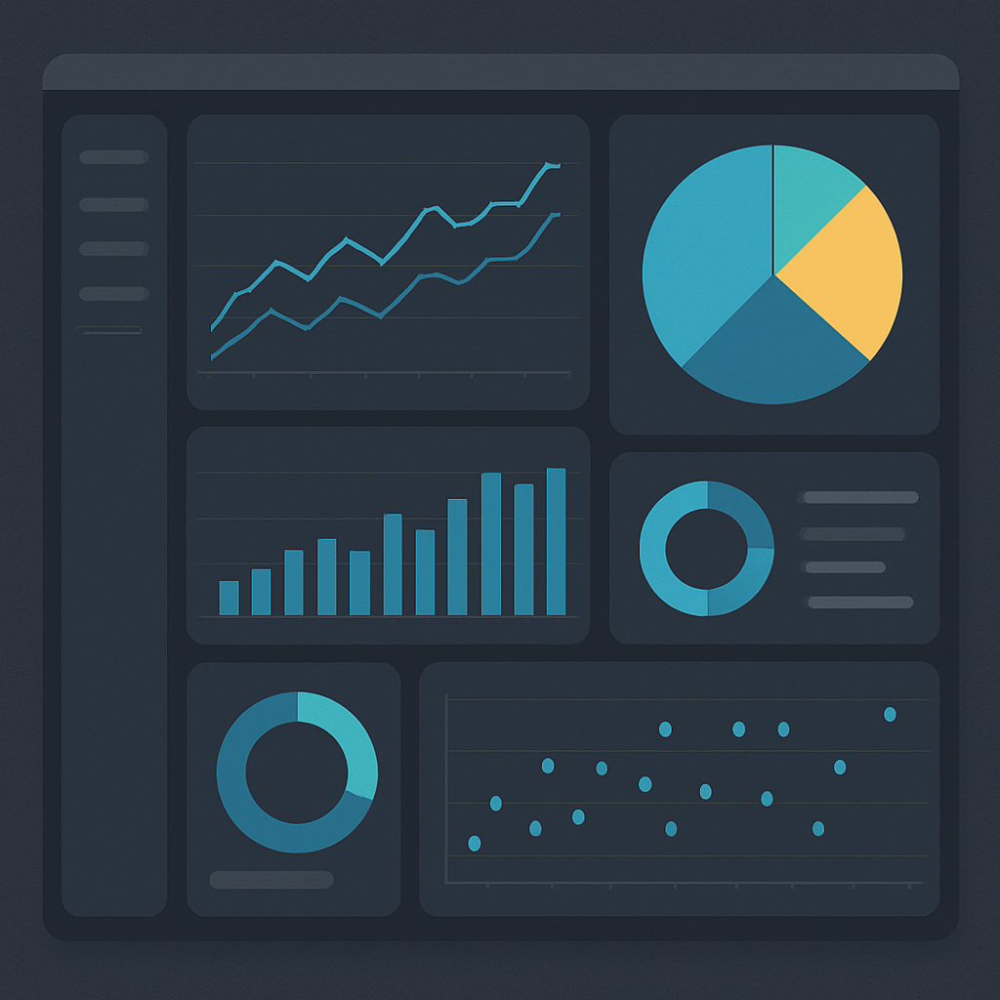

地方交通事業者：需要予測モデル構築
気象データ・需要データ・地域イベントを統合し、需要変動を高精度に予測するモデルを構築。運行ダイヤ改善に貢献し、外部メディアにも紹介される評価を獲得。
Skill Tags
Works
気象データ・需要データ・地域イベントを統合し、需要変動を高精度に予測するモデルを構築。運行ダイヤ改善に貢献し、外部メディアにも紹介される評価を獲得。
地域データをもとにエリアごとの傾向をスコアリング。現場活動の優先度・行動計画の精度を向上させ、意思決定の迷いをデータで解消。
生徒住所・商圏データ・競合情報を統合し、新規校舎開設のための意思決定モデルを構築。可視化レポートや自動分析ツールにより、判断をデータドリブンに切り替え。
店舗運営の定型業務（入力・集計・レポート配信など）をGAS / Pythonで自動化し、手作業を70〜90%削減。スタッフが接客に集中できる負担のない現場を構築。
Services

ANALYTICS / VISUALIZATION
散らばった数字・地域・利用者・文章を整理し、「何を優先すべきか」を誰でも理解できる形にします。
PROCESS / AUTOMATION
入力・転記・集計・報告・連絡などの現場作業を洗い出し、仕組み化すべきポイントを整理したうえで自動化します。
WEB / OPERATION
利用者が見るページと現場が使う管理画面をひとつの流れで設計。情報発信から内部運用まで一人でつなぎます。
Before / After
Profile
滋賀大学データサイエンス学部に在籍。塾・飲食・観光・企業・政治など多領域の現場で、ヒアリングから要件整理、実装まで一気通貫で担当してきました。
「動きながら作る」を信条に、AI・データ・自動化・Webを横断するプロダクトをスピード重視で届けます。
Pricing
※内容・難易度・スピードに応じて調整します。まずはヒアリングで整理しましょう。
DATA / AI / AUTOMATION
I'm Yamato Takeuchi, a young data scientist. I turn on-site energy into systems via the shortest route.
Skill Tags
Works
Integrated weather data, demand records, and local events to build a high-accuracy demand forecasting model. Contributed to timetable improvements and earned recognition through external media coverage.
Scored tendencies for each area with regional datasets so field teams could raise the precision of priority setting and action plans, removing hesitation in decision-making through data.
Unified student addresses, trade-area data, and competitor insights to build decision models for opening new campuses. Visualization reports and automated analysis tools shifted judgments to a data-driven footing.
Automated routine store operations—inputs, aggregation, and report distribution—using GAS / Python, trimming manual work by 70–90% so staff can stay focused on guests.
Services
ANALYTICS / VISUALIZATION
Organize scattered numbers, regions, users, and text so anyone understands what must be prioritized.
PROCESS / AUTOMATION
Surface repetitive on-site work—inputs, transcription, aggregation, reporting, communication—identify what should be systematized, and automate it.
WEB / OPERATIONS
Design public-facing pages and internal consoles as one flow, connecting information delivery with on-site operations.
Before / After
Profile
Currently enrolled in the Faculty of Data Science at Shiga University. I have handled everything from hearing to requirement design and implementation across cram schools, food service, tourism, enterprises, and political teams.
“Build while moving” is my credo, delivering AI / data / automation / web products at speed across every layer.
Pricing
Adjusted based on scope, difficulty, and required speed. Let's align everything during an initial hearing.
Contact
We'll map your current state and next steps together through a complimentary hearing.